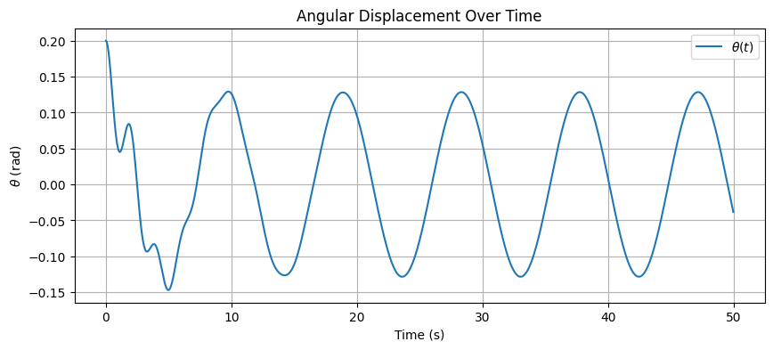
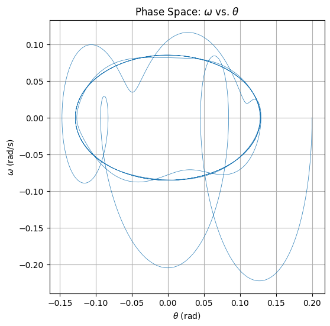
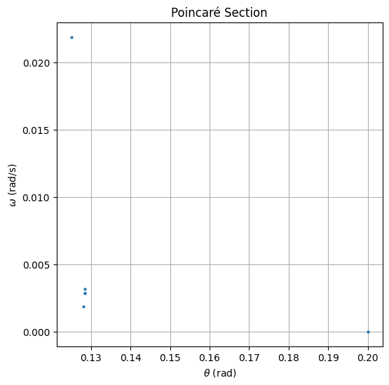

1. Theoretical Foundation
Start with the nonlinear differential equation describing the forced damped pendulum:
$$ \frac{d^2\theta}{dt^2} + b\frac{d\theta}{dt} + \frac{g}{L} \sin\theta = A \cos(\omega t) $$ Where:
Small-Angle Approximation
For small oscillations, approximate \( \sin\theta \approx \theta \). The equation becomes linear:
This is a second-order linear nonhomogeneous differential equation with periodic forcing.
Resonance Conditions
The natural frequency of the pendulum (undamped, unforced) is:
Resonance occurs when the driving frequency \( \omega \) approaches the natural frequency:
At this point, the system exhibits maximum amplitude (resonant response), especially when damping is low.
2. Analysis of Dynamics
- Analyze how varying parameters affects behavior:
- Damping coefficient \(( b )\):Reduces amplitude and energy over time
- Driving amplitude \(( A )\):Controls how strongly the pendulum is forced
- Driving frequency \(( \omega )\):Determines synchronization, resonance, or chaos
Regular to Chaotic Transition
For some values of \(( A )\)and \(( \omega )\), the system shifts from:
Periodic motion
Quasiperiodic motion
Chaotic motion
This transition is visualized using phase space plots and Poincaré sections.
3. Practical Applications
Discuss real-world systems that model a forced damped pendulum:
- Energy harvesting devices
- Suspension bridges under wind or vibration
- Driven RLC circuits in electronics
- Biomechanical systems like human gait
4.Implementation
We create a computational model to simulate the motion of a forced damped pendulum and visualize:
- Time evolution
- Phase diagram
- Poincaré section


